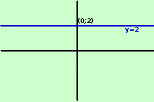

|
sviluppo Seguendo la definizione di Dirichlet dite se le seguenti espressioni rappresentano o meno una funzione reale di una variabile reale evidenziando quale e' l'insieme dominio e quale l'insieme codominio y = 2 In questo caso nell'espressione non compare la x, pero' posso pensare la relazione: ad ogni valore di x corrisponde sempre lo stesso valore di y; avendo trovato una relazione tra le x e le y si tratta di una funzione e' definita anche come funzione costante Per acvere una relazione algebrica fra x ed y puoi pensarla come y = 2x0 Per ogni valore di x, poiche' x0 = 1 avremo sempre y = 1 Vedremo poi che anche 00 e' posto uguale ad 1  Si tratta di una funzione perche' per ogni valore di x posso trovare un valore per y Il dominio e' tutto ℜ Il codominio invece e' il sottoinsieme di ℜ costituito dal punto [2] a destra la rappresentazione grafica |